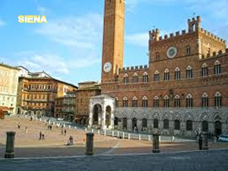
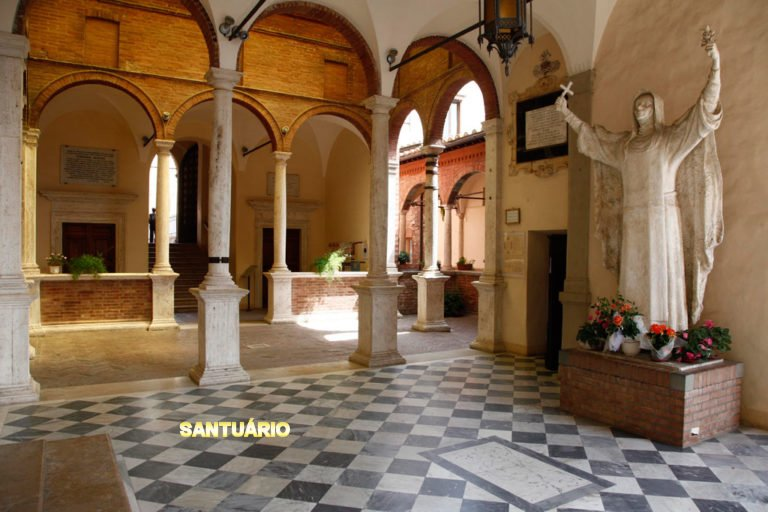
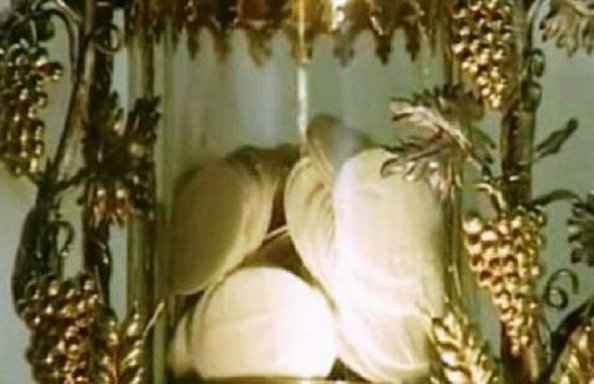
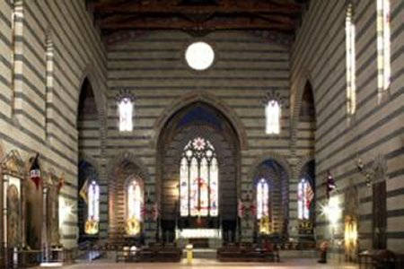

A cerca de 70 km ao sul de Florença, na região central da Toscana na Itália, fica Siena, uma das mais belas cidades medievais mais visitadas do país. Seu acesso é fácil e acessível por ônibus e trem, desde Florença, de Roma e de qualquer outra cidade italiana.

SIENA
A bela cidade italiana onde nasceu e viveu a famosa Santa Catarina de Siena.
Siena, é famosa por ser o berço da mística do século XIV Catarina Benincasa, que adotou o nome religioso de Santa Catarina de Siena, e é também um local entre uma dúzia de lugares onde se pode, até hoje, ver noticias sobre um admirável Milagre Eucarístico.
A casa residencial da família Benincasa, onde Catarina foi uma das 25 crianças que nela nasceu e foi criada, depois da sua morte foi transformada num Santuário. Parte do Santuário é a Igreja do Sagrado Crucifixo, construída no século 16 no lugar do antigo jardim da residência, para abrigar o crucifixo milagroso do qual Santa Catarina recebeu os estigmas de JESUS em 1375. Os visitantes podem ver inúmeras pinturas relacionadas à vida da Santa bem como a cela onde ela dormia, a pedra que usou como travesseiro e vários outros objetos que utilizou durante a sua vida. Vários quartos da casa foram transformados em pequenos oratórios.

SANTUÁRIO DE SANTA CATARINA DE SIENA
Siena é também o local onde ocorreu um grande milagre eucarístico, um dos milagres mais antigos do mundo. Como outros milagres eucarísticos, este também é um milagre eucarístico contínuo, porque ele se mantém preservado em absoluto e perfeito estado até hoje (como acontece com o milagre Eucarístico de Lanciano, na Itália, e o milagre Eucarístico de Santarém, em Portugal). É um testemunho admirável do amor de DEUS para fortalecer nossa fé na “Presença Real” de NOSSO SENHOR JESUS CRISTO na Sagrada Eucaristia.
RESUMO DO FATO
No dia 14 de agosto de 1730, ladrões invadiram a Igreja de São Francisco e roubaram um Valioso e Precioso Cibório contendo Hóstias Consagradas. O roubo foi descoberto no dia seguinte por Padres Franciscanos, e assim, por determinação das autoridades religiosas, todas as festas programadas na cidade para a comemoração da Assunção de NOSSA SENHORA AOS CÉUS no dia seguinte 15 de Agosto, foram imediatamente canceladas. O senhor Bispo pediu orações e reparações ao povo e também, ele intercedeu junto às autoridades civis para que procurassem o Cibório, assim como as Hóstias Consagradas que nele estavam hospedadas. Três dias após, dia 17 de Agosto, um senhor paroquiano da Igreja de Santa Maria observou num local da rua, na calçada próxima a Igreja de São Francisco, uma luminosidade intensa que saia de uma caixa de coleta publica. Quando por curiosidade removeu a tampa da caixa, deparou com uma grande quantidade de Hóstias, que ali tinham sido arremessadas. Admirado e revoltado, observou toda a imundice que existia na caixa metálica onde foram lançadas e abandonadas as Hóstias. De imediato chamou as autoridades da Igreja, que trouxeram um recipiente apropriado para receber as Hóstias, as quais cuidadosamente eles foram contando a medida que removiam da caixa de entulhos. Depois de devidamente examinadas anotaram que foram retiradas 348 Hóstias inteiras em perfeito estado e mais seis metades, que exatamente eram as mesmas quantidades que existiam hospedadas no Cibório que foi roubado.

HÓSTIAS CONSAGRADAS NO CIBÓRIO
No dia 18 de agosto, o Arcebispo de Siena, em companhia do povo cristão, fizeram uma magnífica procissão de desagravo pelo terrível acontecimento, caminhando por diversos Bairros da cidade, transportando aquelas Hóstias que tinham sido roubadas. Desde a saída da Igreja de São Francisco, rezando e cantando fervorosamente, observava-se uma grande emoção nas pessoas participantes, gentes de todas as classes sociais, unidas e emocionadas, cantando e chorando, seguindo os passos do senhor Arcebispo e do Clero de Siena, pelas ruas ainda decoradas para Festa da Assunção de NOSSA SENHORA aos Céus, implorando o perdão ao querido e amado DEUS DA VIDA.
Normalmente os sacerdotes teriam consumido aquelas Hóstias no mesmo dia em que foram encontradas. Mas como havia nelas muita poeira e sujeira que não puderam ser removidas inteiramente, as autoridades decidiram guardá-las naquele estado, esperando que elas se decompusessem naturalmente, o que por certo o fato deveria acontecer num prazo de mais ou menos cinco semanas. Todavia a Vontade Divina se manifestou, e naquele prazo esperado, as Hóstias não se decompuseram. Ao contrário,apareceram como novas, como se tivessem sido preparadas naquele exato momento, estavam cheirosas e tão delicadas, como naquele dia em que realmente elas foram preparadas pela primeira vez.
IGREJA DE SÃO FRANCISCO (Interior)

Ao longo dos anos, vários exames e testes foram realizados para autenticar esse Milagre. A primeira investigação oficial ocorreu em 1780. As Hóstias Consagradas foram examinadas e provadas, e confirmadas como frescas e incorruptas. Outras investigações por comissões especiais foram feitas em 1789, 1815 e 1850. Durante o exame de 1789, o Arcebispo mandou colocar várias Hóstias “não consagradas” em uma caixa lacrada que foi então mantida fechada no escritório da chancelaria. Quando a caixa de metal foi aberta vários anos depois, as Hóstias foram encontradas desfiguradas e extremamente deterioradas. Esta realidade deixou evidente, que as "Hóstias Consagradas" embora tivessem o aspecto exterior de Hóstias de trigo, eram verdadeiramente o CORPO DE NOSSO SENHOR.
A investigação mais significativa ocorreu em 1914 por uma comissão especial composta por vários cientistas e professores italianos, bem como vários teólogos e funcionários da Igreja. Um teste com ácido e amido foi realizado, e as Hóstias Consagradas foram novamente provadas. Concluiu-se que as Hóstias eram feitas de farinha de trigo peneirada e que estavam perfeitamente preservadas. A Comissão concordou que qualquer Pão Ázimo, que fosse preparado e mantido fechado em condições normais (como foi o caso das Hóstias Consagradas), não poderia permanecer intacto por tanto tempo, e que por isso mesmo, nenhuma explicação natural poderá ser encontrada para explicar a notável preservação das "Hóstias Consagradas desde o ano 1730".